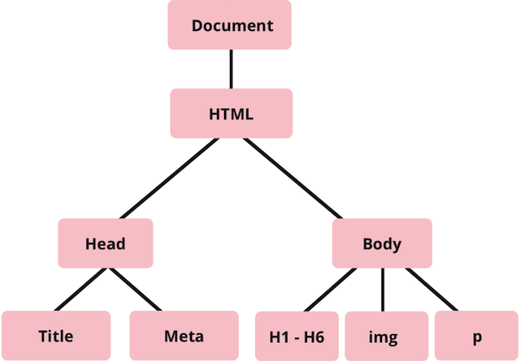
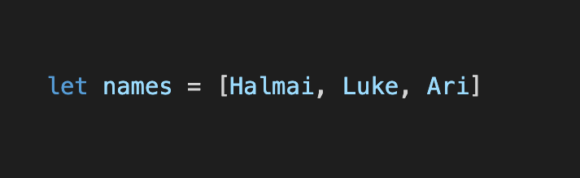
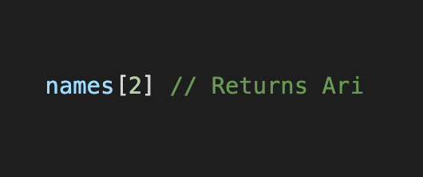
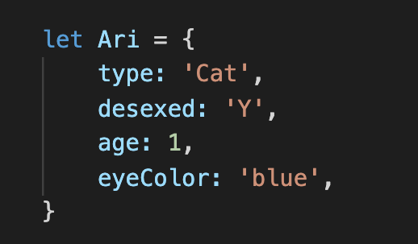
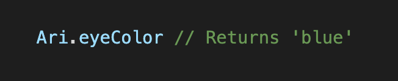

HTML, CSS and JavaScript aren’t the same, but they can function together as a team! It might be easier to understand the differences between these three languages if you were to consider a webpage as a human body.
HTML stands for Hypertext Markup Language. HTML is a structural language that builds the basic structure of a webpage, similar to your skeleton. This is done through tags, elements, and attributes. Things like headings, paragraphs, images, text and hyperlinks can all be provided by HTML!
If HTML is the skeleton, CSS is the skin.
CSS stands for Cascading Style Sheet. CSS provides the styling and layout of a webpage. With CSS you can set the colour and background of your elements, as well as the font, margins, spacing, padding- basically making your webpage look visually appealing. Without CSS, websites would look rather dull. Or naked.
JavaScript is a programming language that provides calculations, logical conditions and all the functionality to a webpage eg. a popup alert or sign in prompt! Without getting too complicated, it’s like your brain, putting your body into motion.
JavaScript allows you to make your webpage think and act- which is what programming is all about!
The Document Object Model (the DOM) is a programming interface which dictates how your HTML documents are interpreted by a web browser.
As the browser reads an HTML document, it builds a tree-like model called the DOM that represents it, and uses that to work out what to display.
Check out this model below:
This tree model reflects how the HTML elements contain other child elements. JavaScript has functions that let you quickly extract data from certain parts of the tree, depending on the attributes you gave the HTML elements. Each HTML element in the DOM is called a node. CSS and Javascript are used to change or manipulate what you see on a browser by accessing the nodes through the DOM.
Ever been trapped in the monotony of a boring schedule? Feel like you a repeating the same tasks over and over M-F? You’re existing in a loop! Thankfully, human routines can be changed or altered when appropriate.
Just like our routines, sometimes we want our program to act differently based on the information supplied to it. Control flow will run from top to bottom of the code unless it encounters a statement that changes the flow of the program such as a loop. This enables you to tell your program on how to decide which sections of code to run and when.
Loops in JavaScript provide an easy way to do something repeatedly. Want to repeat something 10 times? The amount of code needed would be the same whether you wanted to repeat it 10 times or 10,000 times. You’d only need to specify the number. The loop will end once specified conditions have been met.
While most humans find repeating the same task an infinite amount of times soul destroying, computers are excellent at it!
An array can hold many values, and you can access the values by referring to an index number, similar to a numbered list. Keep in mind, an arrays index number will always start at [0].
A list of names in an array would look like:
If you wanted to extract the third name from the list you would do so by:
Objects are used to represent something. An object contains key values assigned to it. Let’s say you wanted to store more information about Ari:
To access Ari’s eye colour, you would do so by:
Functions are basically a set of statements that perform a task or calculate a value.
Functions are useful as they let you set up specific instructions which you can call into action at any time without having to repeat the same line of code.
Repeating code is not only annoying, it means your files will be bigger and take up more space. If wanting to modify something, you would have to change that same code in a few places, which increases the likelihood of introducing bugs.